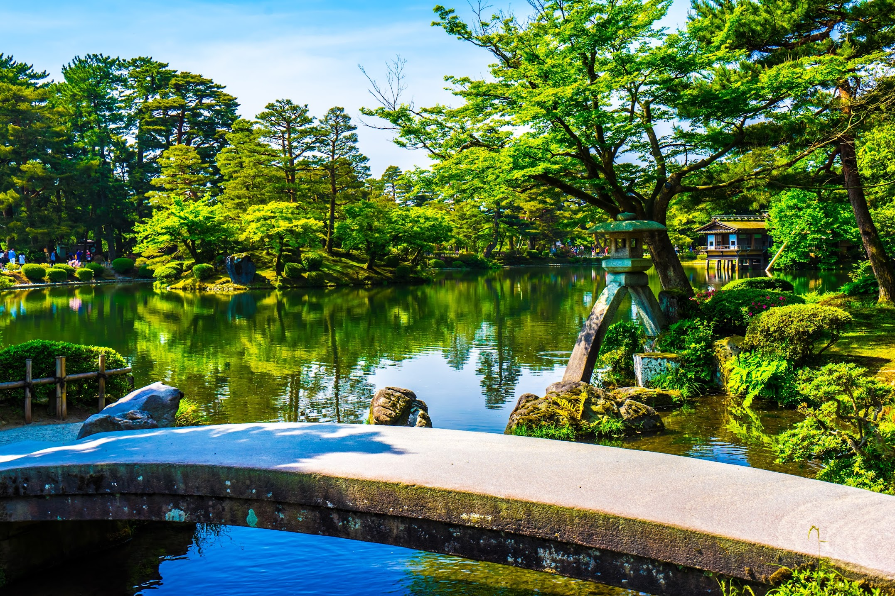
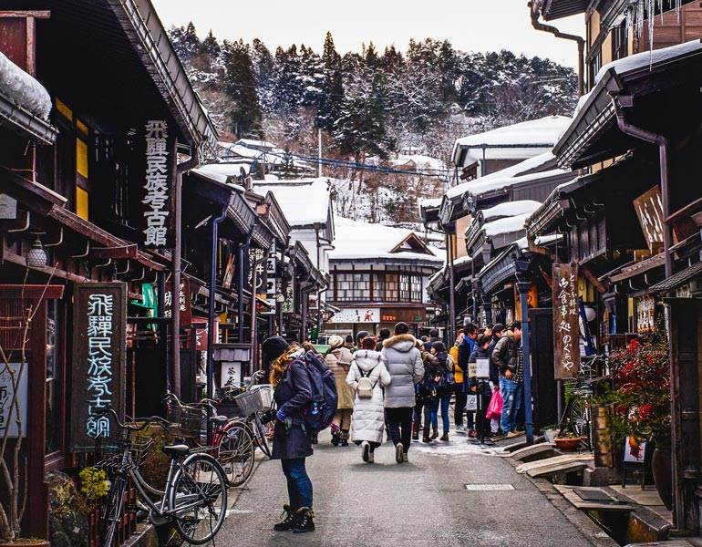

Chūbu (中部) literally means "central part". Unlike Chūgoku, the name is easy to explain; the region sits in the middle of Honshū, in between the Kantō region to the east and the Kansai area to the west. It is often split into three smaller areas: Hokuriku on the Sea of Japan coast, Kōshin'etsu in the mountainous interior, and Tōkai on the Pacific coast. Due to the region being central, it is a major transportation hub for the country. Many post towns along these old transportation routes, such as Magome and Tsumago, are still preserved today. As for nature, Chūbu contains the highest mountains in Japan Mount Fuji and the Japanese Alps, which split the region into very different climates. The Pacific side is mild and sunny in winter, while the Sea of Japan side receives some of the heaviest snowfall in the world.
Traditional Japanese Music
Attractions
Kenrokuen Garden:
This location is a beautiful traditional Japanese garden.
It has wonderful ponds, bridges, and trees. It is an ideal place to take a walk and enjoy the scenery.
You can really relax and enjoy Japan's natural beauty.
I would personally love to visit this location, as it is a very peaceful and beautiful place.
- Location: Kanazawa, Ishikawa Prefecture
- Entry Fee: Approx. ¥320 per adult

Mount Fuji:
Japan's tallest mountain, at 3,776 metres.
It is a very popular place for tourists to visit.
Tourists may enjoy the views, the surrounding nature or even climb the mountain.
I would highly recommend visiting this location, as it is a very iconic part of Japan.
- Location: Yamanashi and Shizuoka Prefectures.
- Viewing fees: Vary by location, generally free. Climbing fees will apply.
Takayama Old Town
This location is a beautifully preserved historic town.
Between the traditional wooden buildings, narrow streets and the old merchant houses,
there is a lot to see and do, if you enjoy the history and culture of Japan.
I would highly recommend visiting this location.
- Location: Takayama, Gifu Prefecture
- Entry: Free however individual attractions may have fees.

Accommodation

| Hotel | Attractions | Price per Night | Rating |
|---|---|---|---|
| Kanazawa Hakuchoro Hotel Sanraku | Kenrokuen Garden | From €154 | 4.4/5 |
| HOTEL WOOD TAKAYAMA | Takayama Old Town | From €143 | 4.6/5 |
| Mizno Hotel | Mount Fuji, Lake Kawaguchi | From €163 | 4.7/5 |
Food
Here are 3 reccommended dishes to try if you visit Chubu.
Follow this link to see more good foods!